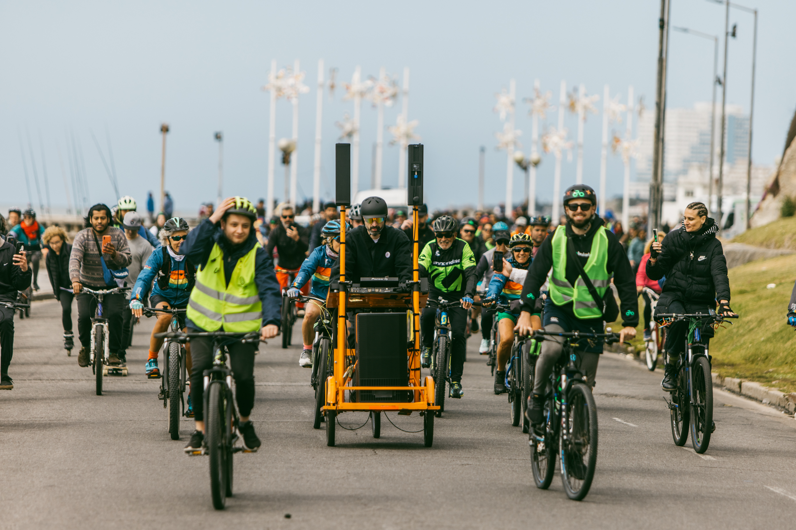
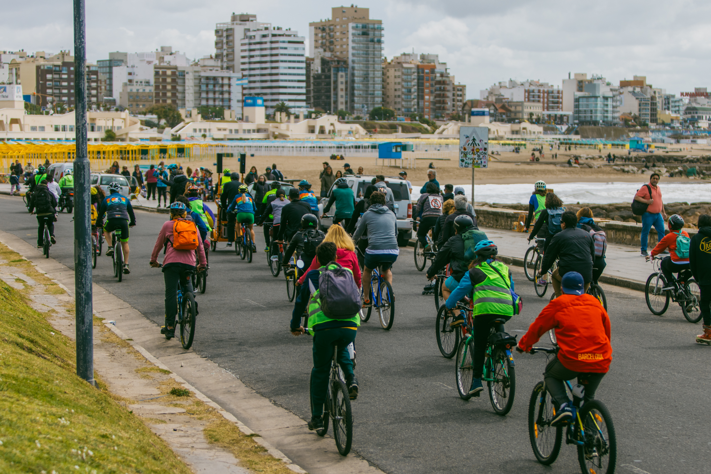
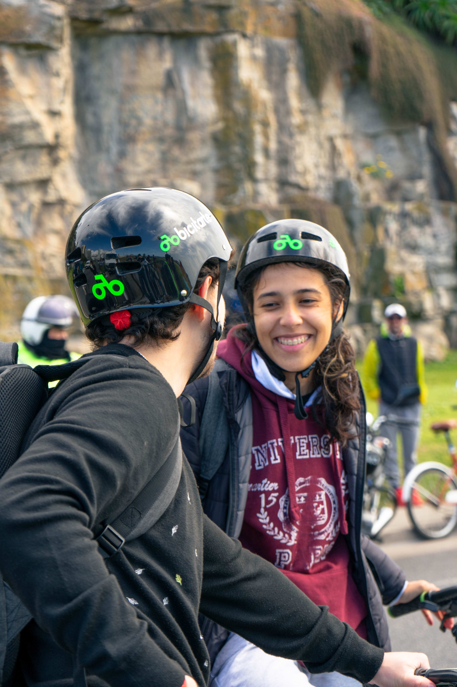
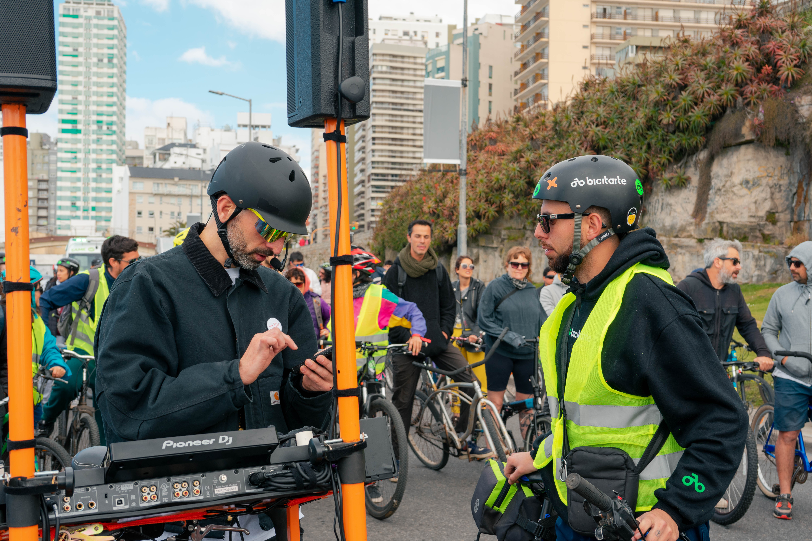
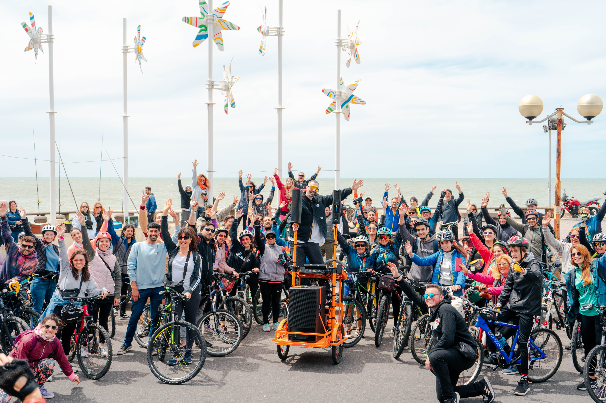
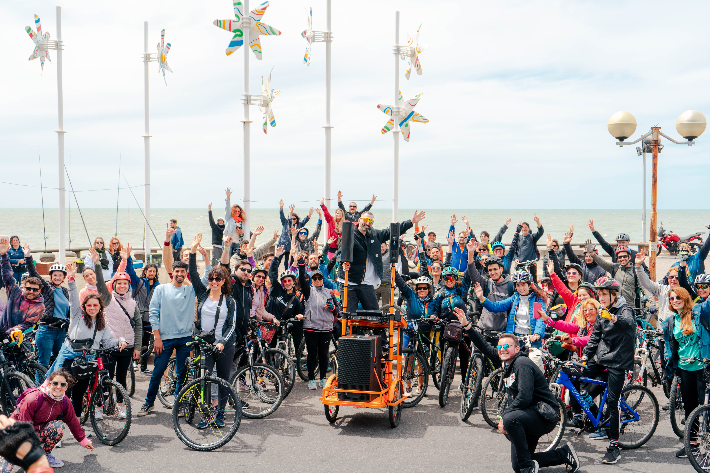

Eventos ESPECIALES
Mirá donde podes llegar en bici :)

¡Sumate a la caravana de La BICI NARANJITA! 🍊🚴🏻 @badboyorange llega a Mar del Plata y arriba a TRImarchi en su triciclo a pedal pintado de naranja, con mesa de DJ y sonido para enfiestar a un gran caudal de almas. ¿Te sumás al recorrido? Nos encontramos este Sábado 15/10, 11 hs en los molinos del Paseo Dávila, desde allí ida y vuelta al Museo Mar.
Puuuuura fiesta que no te la podés perder, veni con quien quieras para disfrutar y ser parte de este evento h i s t ó r i c o en la ciudad.
@labicinaranjita irá marcando el ritmo del pedaleo con su música y todo el equipo estará acompañando y motivando 🍊🚴♂️🚴♀️🚴
Actividad Libre y Gratuita dentro del evento TMDG20 @trimarchidg by @domestik
Algo del recorrido...
    
